YS1 5-SPD M/T
YS1 5-spd M/T, Clutch Assembly:
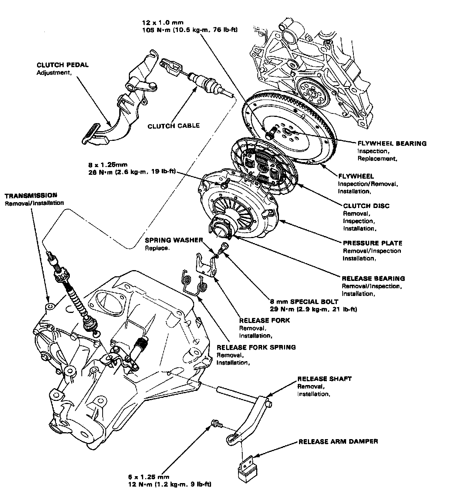
YS1 5-spd M/T, Clutch Pedal (w/0 Cruise Control):
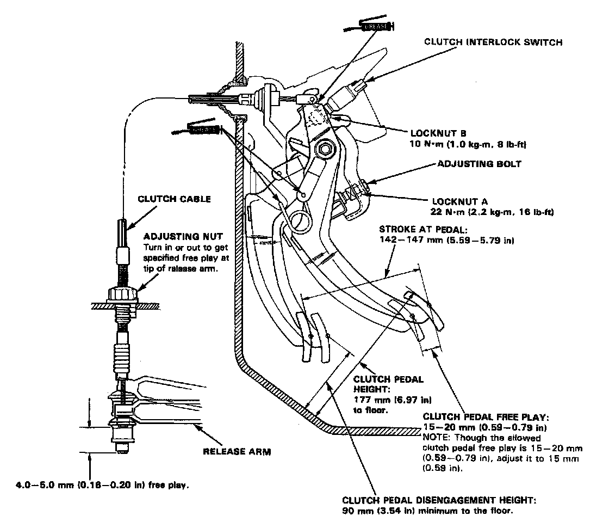
YS1 5-spd M/T, Clutch Pedal (w/Cruise Control):
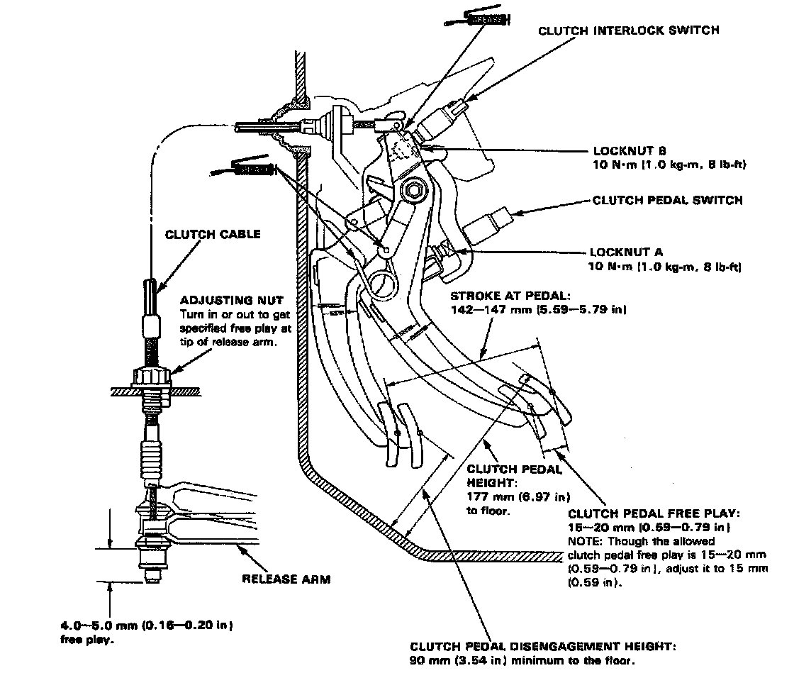
YS1 5-spd M/T, Clutch Release Fork:
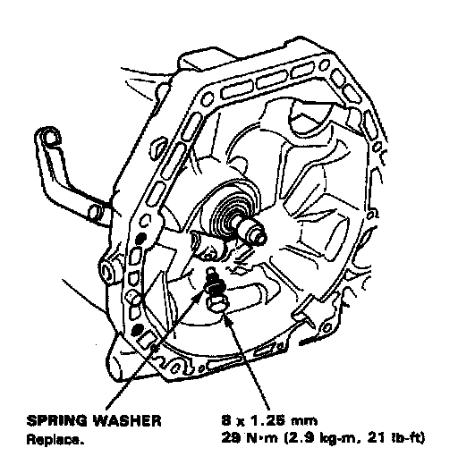
YS1 5-spd M/T, Flywheel Torque & Sequence:
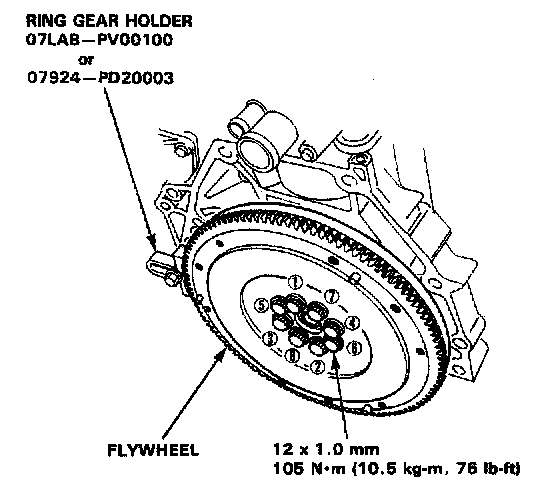
YS1 5-spd M/T, Pressure Plate Torque & Sequence:
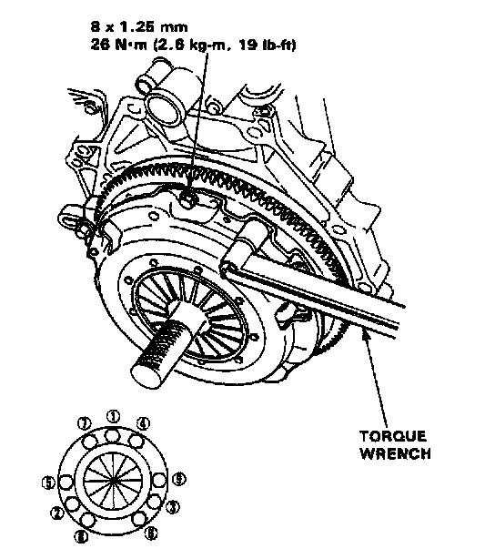
YS1 5-spd M/T, Gearshift Mechanism:
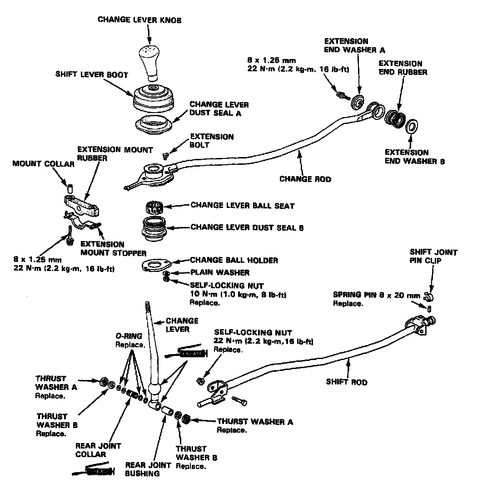
YS1 5-spd M/T, Transmission Assembly 1 Of 2:
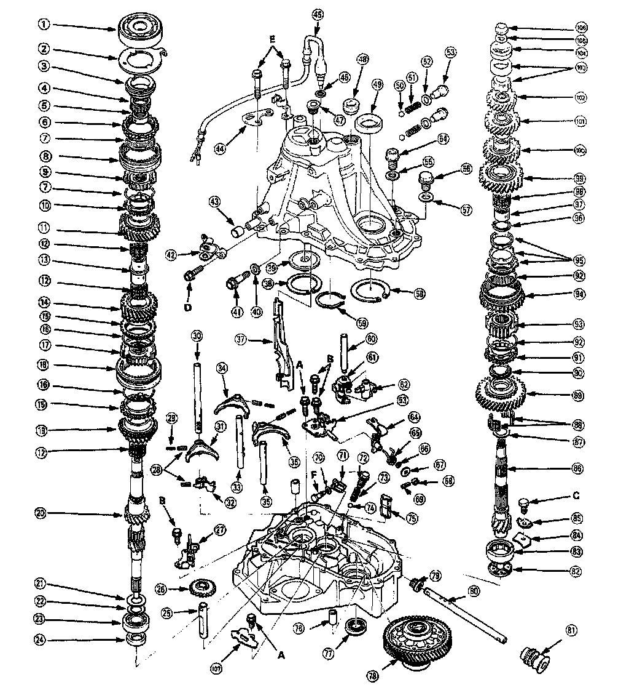
YS1 5-spd M/T, Transmission Assembly Legend 2 Of 2:
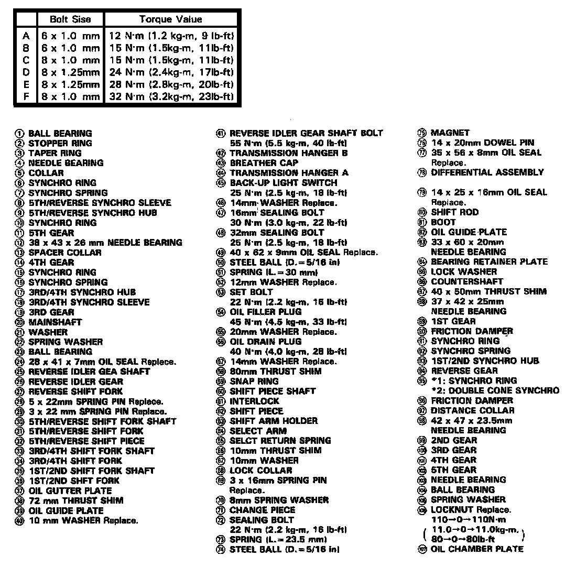
YS1 5-spd M/T, Shift Rod & Chamber Plate:
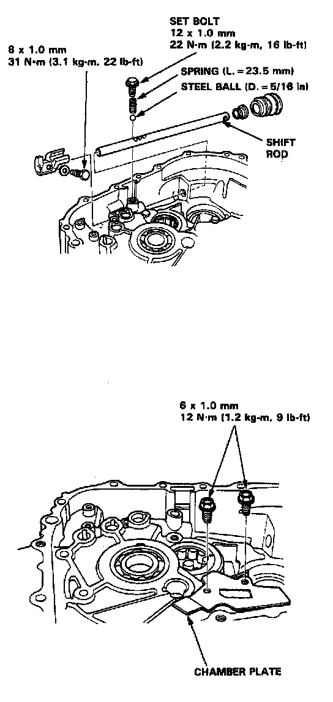
YS1 5-spd M/T, Change Holder Assembly:
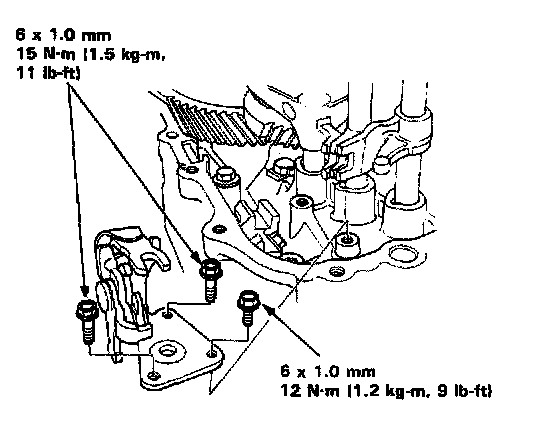
YS1 5-spd M/T, Transmission Housing Torque & Sequence:
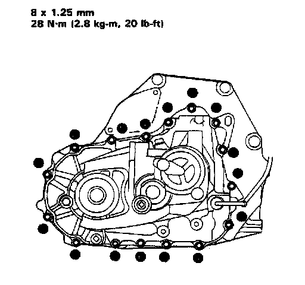
YS1 5-spd M/T, Idler Gear Shaft Bolt:
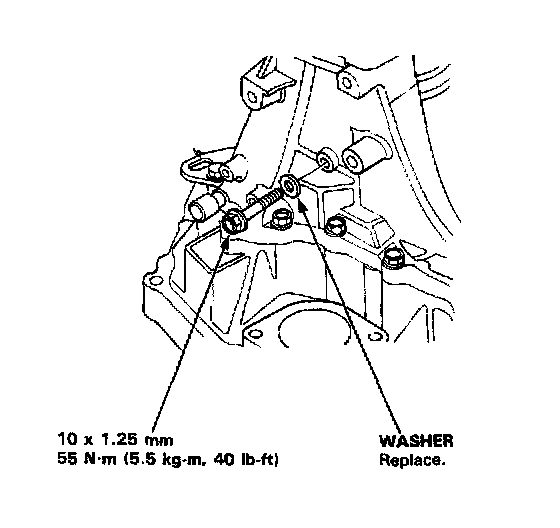
YS1 5-spd M/T, Clutch Cable Bracket:
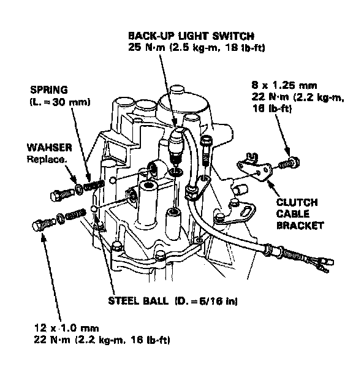
YS1 5-spd M/T, Transmission Assembly:
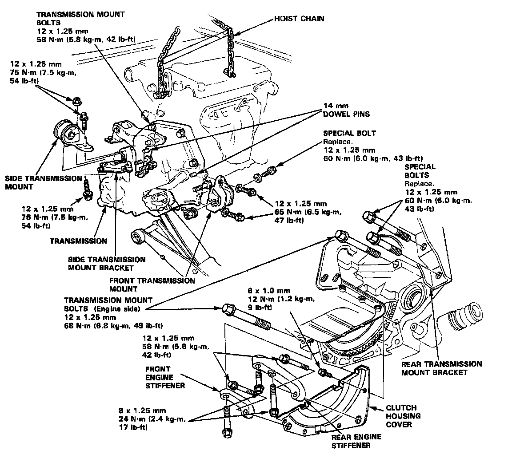